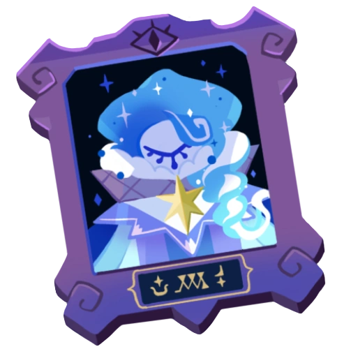
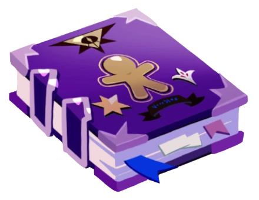
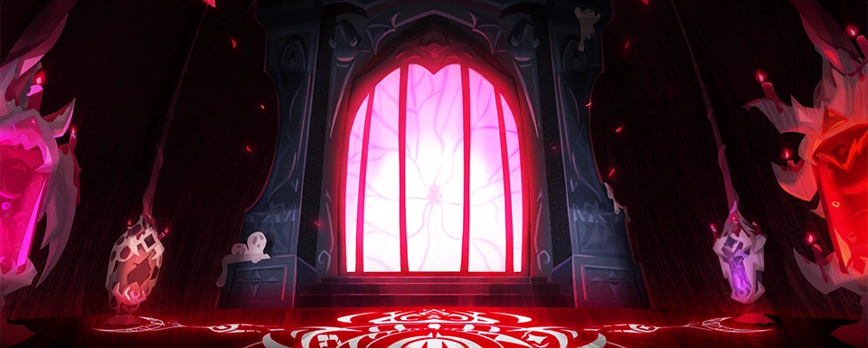

Speculation and Headcanons
The Fount of Knowledge
Inarguably the most heavily debated aspect of Shadow Milk's character is his past identity as a divine emissary, known only as the FountCuriously enough, this is in contrast to the naming pattern that the rest of the emissaries share where their ingredient is used as a descriptor for their virtue (see: Sugar of Happiness, Salt of Solidarity, Flour of Volition; Burning Spice also follows this convention, though for some reason it's absent in the English translation). Whether or not this is meant to imply anything about Shadow Milk's relationship to his core ingredient is entirely unclear, I just find it interesting. of Knowledge. Compared to his other Beast peers, everything from the precise cause of the Fount's downfall to his appearanceYou can tell I started working on this before December 16th, 2025. has been heavily obfuscated both in and out of the game, so much so that his absence teeters the edge of haunting the narrativeOverly Sarcastic Productions has a fantastic video that explains this writing trope, but the short definition can more or less be summed up as "a character of major narrative significance, but (something in) the plot can't happen if they're actually there." outright. This is not to suggest that cookies in the know (namely Shadow Milk himself) are unwilling to discuss the Fount of Knowledge's existence; rather the details have only come in broad strokes and with a blatant wink-nudge to the player that serves to imply that the finer details are being withheld for reasons of bigger scope than just fitting the character's themes of obfuscation and uncertainty.
Even in spite of his upcoming Dominion of The Beasts segment, his character (or lack thereof) remains celebrated across the fandom as something of a wild card in the game's lore, heavily varied in interpretation and oft-regarded as distinctly seperate from his future-present self. He's basically a psuedo-original character that all manner of artists and writers in the fandom like to take the basic premise of and then run in wildly different directions with - whether or not these interpretations are fated to collapse in on themselves once we actually get a glimpse of his character remains to be seen.
Relationship to the Witches
One of the things I find most personally interesting about Shadow Milk's behavior and characterization is his fixation upon the Witches, especially when contrasted against the opinions held by the rest of the Beasts. Far and away, he expresses the most amount of disdain for their creators, to the extent of actively calling for their downfall and becoming aggressive whenever they're discussed by other cookies, believing them to be the primary cause for his suffering.Minding, of course, that all of them are unaware of a rather crucial detail about their imprisonment in the Silver Tree. If you know, you know. However, a few cases of offhand commentary from the Beast gives reason for pause and further scrutiny, such as:
🙶 First, I want to hear what that Cookie has to say.
We decide what to do after. 🙷
- Silent Salt Cookie
🙶 Ha ha! That's what noble knights do–won't spill a droplet of blood without good reason. Oh, wait! We, Cookies, have no blood... What do we have again? 🙷
- Shadow Milk Cookie (Abyss of The Four)
Even in context, him evoking a distinctly human term (and then making a show of
correcting himself) is pretty much a total non-sequitur, and the only thing it really
serves to demonstrate is that Shadow Milk is familiar with some of the differences in
biology between cookiekind and their creators. This line sticks out SO much from the
rest of Abyss of The Four that I've been ruminating on it's implications since
the update came out. There are a couple ways it could later prove relevant: In my mind,
this unique habit of breaking out human terminology serves to back the theory that he's
aware of the truth behind cookiekind's existence (in that they are created to be eaten),
and/or was at some point close enough with the Witches during his time as an emissary to
have gained Knowledge of what makes them different from cookies, under more innocent
pretenses.
Either conclusion makes his present day disdain all the more intriguing; does his hatred
run deeper than just them imprisoning him? Did he, perhaps, once harbor a more
personal and involved connection with these almighty beings that created him?
Regardless, given that he's often alone in his expressions of resentment - and is
typically the first Beast to immediately recognize the Witches' influence and powerSuch as when Dark Enchantress revealed herself to be capable of wielding Baking
Magic, which by his word as the primordial master of magic should be impossible
for a cookie to achieve.
- it's not all that far off of a guess that he knows something about them that the rest
of the Beasts don't.
The Blueberry Yogurt Academy
Another implied connection stems from the backstories of both Pure Vanilla Cookie and White Lily Cookie, during their shared time together as students at the now-abandoned Blueberry Yogurt Academy, showcased in World Exploration 7 and 8. Beyond the school sharing a multitude of visual motifs and aesthetics with the Shadow Milk-focused levels of Beast Yeast,See: Very similar blue-toned color palettes, Baroque-esque architecture, a wide variety of milk and cream-based enemies and set pieces, and chess motifs. Shadow Milk himself also has some elements that conversely evoke the image of blueberries (namely the Yogurt River of Rebirth and his very own magic staff), and a design insight panel held at the 4th Anniversary popup convention in South Korea moreover showcased that there was a period during development where Shadow Milk's (near-final) design was based entirely upon them as "Blue Beetle Cookie". flashback dialogue between the young Ancients serves to suggest that Shadow Milk himself might have had involvement in the school in ages past - more specifically, the broad-sweeping implication that he was the school's first headmaster.

🙶 Do you see the first headmaster's portrait over there?
Wise, brilliant...
The first headmaster taught the Cookies how to use magic. 🙷
- White Lily Cookie (Hall of Enlightenmnet)
Not only does this single declaration alone perfectly align with our
understanding of the Fount of Knowledge's own magical prowess and role as an emissary,
but this dually leaves us with some fascinating questions about just how deep
Shadow Milk's influence truly runs in the life (and rebirth) of White Lily Cookie,
specifically.
Regardless of how direct (or even intentional) the influence
was, the impact the Yogurt Academy and the contents of its forbidden archives have had
are undeniable: White Lily's pursuit of Knowledge - for answers to the truth
behind cookiekind's existence - not only pushed her to use Dark Moon Magic during her
academy days (which is what brought about the destruction of the school to begin with),
but also acted as the catalyst for Dark Enchantress Cookie's very existence later down
the line,

🙶 This book is titled "The Ultimate Cookie Recipes". 🙷
- White Lily Cookie (Hall of Enlightenmnet)
As well as her understanding of, and forays into, forbidden baking magic.

🙶 The Ultimate Cookie, huh? So shiny, so strong!
A real SHOWSTOPPER, is it not?! 🙷
- Shadow Milk Cookie (Wind, Pirecer of Darkness)
...And also his title screen literally just has a crossed-out headmaster's portrait in it. So make of that what you will.This drove the fandom goddamn insane for about two-thirds of 2025, but since the release of Silent Salt's Beast Yeast episodes, I think the intention is more clearly an omniscient taunt at Lily's personal tribulations and guilt surrounding what happened to the academy during that part of the story - especially since the rest of the Ancient puppets in this illustration all hearken to their personal struggles/"low points" during their encounters with their Beast counterparts.